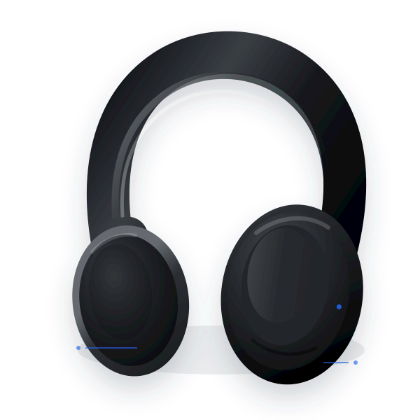

Quiet by default
장식보다 상태와 조작을 우선합니다. 표면은 낮은 대비로 구분합니다.
헤드셋보다 앞서지 않는 화면. 필요한 정보는 또렷하게,
조작은 짧고 확실하게 설계합니다.
장식보다 상태와 조작을 우선합니다. 표면은 낮은 대비로 구분합니다.
블루는 선택, 연결, 진행처럼 의미 있는 순간에만 사용합니다.
4px 간격 체계와 안정적인 자간으로 정보의 호흡을 만듭니다.

LDAC · 음질 우선
정보 밀도는 높게, 읽는 피로는 낮게.
한글과 영문이 같은 리듬으로 보이는 현대적인 시스템 산세리프.
44 / 1.14 / -0.035em집중을 위한 고요함
28 / 1.25 / -0.025em노이즈 캔슬링
18 / 1.4 / -0.015em주변 소리 제어
15 / 1.65 / -0.005em현재 연결된 헤드셋의 상태를 확인하고 설정을 조절합니다.
12 / 1.5 / 0.01em마지막 동기화 · 방금 전
차가운 중성색 위에 하나의 명확한 블루.
#EFF6FF#DBEAFE#3B82F6#2563EB#1D4ED8#FFFFFF#F7F8FA#E2E6EC#697386#1519224px의 배수로 예측 가능한 리듬을 만듭니다.
041×082×123×164×246×328×4812×08Control12Panel16Feature상태는 즉시 읽히고, 조작은 망설임 없이.
Height 40FormBinaryContinuousFeedback